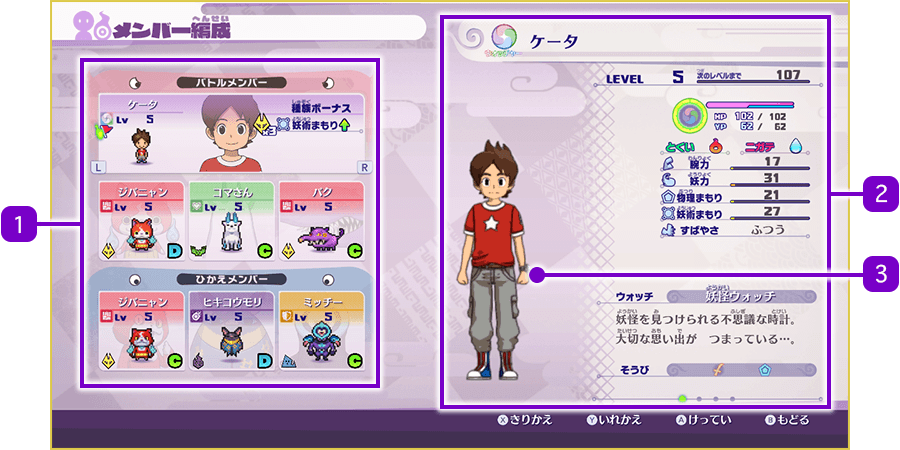
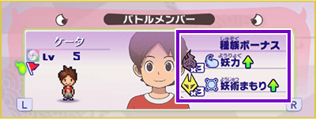
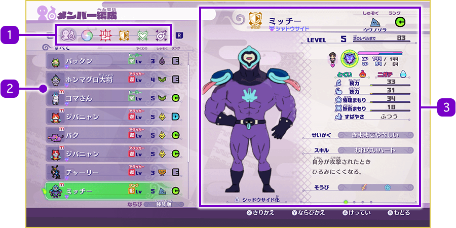
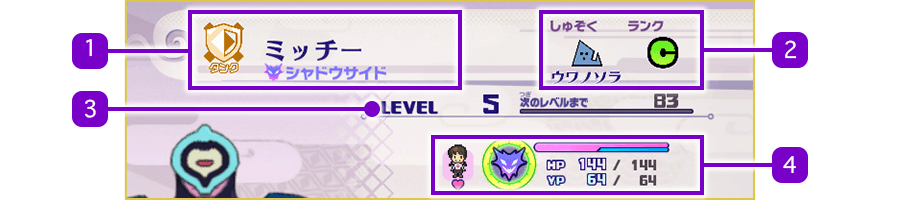
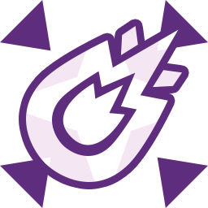

Formación del equipo
En la aplicación "Equipo" puedes configurar la formación de los miembros que participan en la batalla. También te permite consultar el estado de los Watchers y de tus amigos Yo-kai, así como equipar objetos o seleccionar técnicas.
Al abrir la app, selecciona "Equipo principal" o "Lista completa".
Equipo principal
Muestra a los miembros activos y a los miembros en reserva. Selecciona un personaje y pulsa Ⓐ para abrir el menú de organización.
Si colocas el cursor sobre un Yo-kai y pulsas Ⓨ, podrás seleccionar a otro personaje y pulsar Ⓐ o Ⓨ para intercambiar las posiciones de ambos.

- 1Miembros principales
-
Watchers: Muestra su nombre, nivel y el bonus de tribu activo actualmente.
Yo-kai: Muestra su nombre, rol, nivel, tribu y rango. - 2Información del personaje
-
Pulsa el Ⓧ para alternar la vista entre: Estado, Ataque y Animáximum, Técnicas y Equipamiento actual.
- 3Forma del personaje
-
Mueve el stick derecho de izquierda a derecha para rotarlo. Si el personaje tiene transformaciones, pulsa el botón del stick derecho para ver su otra forma.
Bonus de tribu (Unidad)
Si incluyes un total de 3 o más Yo-kai de la misma tribu en tu equipo (sumando activos y reserva), se activará un bonus de tribu que aumentará sus atributos.
Si los 6 miembros del equipo pertenecen a la misma tribu, el bonus aumentará aún más.

Opciones del menú de organización
| Cambiar | Intercambia el personaje seleccionado por otro de tu lista. |
|---|---|
| Cambiar equipo / técnicas | Permite revisar o cambiar el equipamiento (un arma y una armadura) y las técnicas. Solo los Watchers pueden cambiar de técnicas de combate, aunque algunos personajes también pueden cambiar su Animáximum. |
| Asignar como Líder | El Líder es el personaje que controlas al iniciar el combate. Estará marcado con un icono especial. |
| Quitar | Retira al personaje seleccionado del equipo. |
| Cambiar nombre | Permite renombrar al personaje. |
| Restablecer nombre | Vuelve al nombre predeterminado del personaje. |
Lista
Si seleccionas "Equipo" y, a continuación, "Miembros principales", se mostrarán los miembros actuales del equipo de combate y los suplentes, y podrás cambiar la composición del equipo.

- 1Categorías
-
Usa L y R para filtrar la lista. Puedes ver Todos o filtrar por roles específicos como Atacante.
- 2Lista de Yo-kai
-
Pulsa Ⓨ para cambiar el orden de la lista. Selecciona un personaje con Ⓐ para abrir su menú de organización. Los personajes recién obtenidos se marcarán con "NUEVO" y los que estén en el equipo activo llevarán una "m".
※ Atención: Si seleccionas la opción "Liberar" en el menú de organización, el Yo-kai se marchará y no podrás recuperarlo.
- 3Información del personaje.
Estado

- 1Rol y nombre del personaje
-
Hay cinco roles, los cuales se mostrarán a continuación.
Atacante Especialista en ataques cuerpo a cuerpo. 
ComandoEspecialista en ataques a distancia. Tanque Especialista en defensa; atrae la atención de los enemigos. Sanador Especialista en sanar y dar soporte a los aliados. Watcher Humanos portadores del Yo-kai Watch (como Nathan). - 2Tribu y Rango
-
Solo se muestra en los yokai. El rango indica el nivel de habilidad y va de E (el más bajo) → D → C → B → A → S (el más alto).
- 3Nivel actual / EXP restante
-
Al ganar combates acumularás experiencia (EXP); al llenar la barra, el personaje subirá de nivel, aumentando sus estadísticas y pudiendo aprender nuevas técnicas.
- 4Estado y afinidad
-
Muestra las barras de Animáximum, PV (salud) y PY (Yo-ki). También indica la "Persona favorita": luchar junto a su persona favorita aumenta las estadísticas del Yo-kai y evita que vaguee.
Otros parámetros
| Fortalezas y Debilidades | Muestra los elementos a los que el personaje es resistente o vulnerable mediante iconos. |
|---|---|
| Fuerza | Afecta a la potencia de los ataques físicos. |
| Espíritu | Afecta a la potencia de las técnicas elementales / de Yo-ki. |
| Defensa física | Reduce el daño recibido por ataques físicos. |
| Defensa espiritual | Reduce el daño recibido por ataques elementales / Yo-ki. |
| Velocidad | Afecta a la velocidad de movimiento. |
| Personalidad | Influye en el comportamiento del Yo-kai y en sus atributos durante la batalla. |
| Habilidad | Muestra el nombre y efecto de la habilidad pasiva que se activa automáticamente. |
| Equipamiento | Muestra los iconos de las armas o armaduras equipadas. |